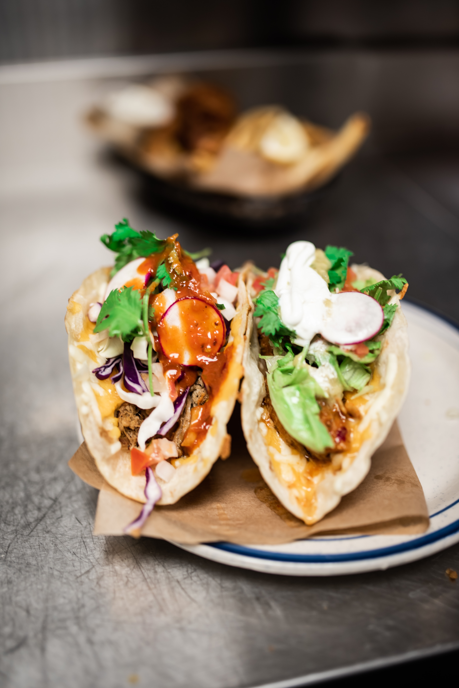

My Tacos Recipe

Description
Tacos are a beloved Mexican street food that combine flavorful seasoned meat, fresh and zesty toppings, and a warm, soft tortilla shell.
The beauty of tacos lies in their versatility - you can customize them to suit your tastes with a variety of fillings and toppings.
Each bite is a burst of vibrant flavors, from the tender meat to the crisp, colorful toppings, making tacos a fun and satisfying meal for any occasion.
Ingredients
For the Seasoned Meat (Beef):
- 1 lb ground beef
- 1 small onion, finely chopped
- 2 cloves garlic, minced
- 1 tablespoon chili powder
- 1 teaspoon ground cumin
- 1/2 teaspoon paprika
- Salt and pepper to taste
- 1/4 cup water
For the Toppings (suggestions):
- Lettuce, shredded
- Tomatoes, diced
- Cheese (cheddar, Monterey Jack, or Mexican blend), shredded
- Avocado or guacamole
- Sour cream
- Salsa (mild, medium, or hot)
- Fresh cilantro, chopped
- Lime wedges
For the Tortillas:
- 8 small flour or corn tortillas
Steps To Follow
-
Cook the Seasoned Meat:
-
In a skillet over medium heat, cook the ground beef, breaking it up with a spoon, until browned.
Drain excess fat if necessary. Add chopped onion and garlic, and cook until softened.
Stir in chili powder, cumin, paprika, salt, and pepper. Add water and simmer until the mixture thickens.
-
Prepare the Toppings:
-
Wash, chop, and prepare your chosen toppings. Arrange them in separate bowls for easy assembly.
-
Warm the Tortillas:
-
Warm the tortillas in a dry skillet over medium heat for about 20-30 seconds per side, or wrap them in a damp kitchen towel and microwave for 30 seconds.
-
Assemble the Tacos:
-
Spoon a generous portion of the seasoned meat onto each tortilla. Add your choice of toppings.
-
Serve:
-
Squeeze a bit of fresh lime juice over the top, if desired. Serve the tacos hot and enjoy!
Feel free to get creative with your taco fillings and toppings to suit your preferences.
Tacos are all about personalization!